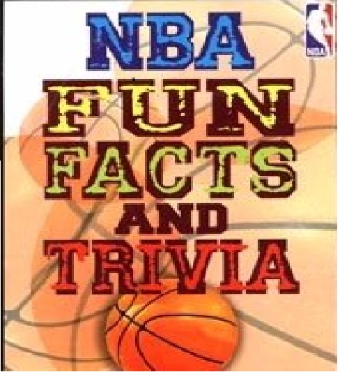

The National Basketball Association
Fun Facts & Records
This section will highlight some NBA fun facts and all-time records, did you know...?
- The NBA was founded on June 6th, 1946 in New York City, NY. Prior to this founding, there were two seperate basketball leagues known as Basketball Association of America (BAA) and the National Basketball League (NBL)
- In the 1960-61 NBA season, Wilt Chamberlain grabbed 55 rebounds in a game against the Boston Celtics, setting the NBA record for most rebounds (colloquially referred to as "boards") in a single game.
- Wilt Chamberlain scored 100 points in a game on March 7th, 1962 against the New York Knicks, setting the NBA record for most points scored in a single game
- The record for most assists by one player in an NBA game was set on December 30th, 1990, and is held by Scott Skiles, then playing for the Orlando Magic, where he accrued 30 assists over the course of 44 minutes of playing time against the Denver Nuggets
- On December 9th, 2004 Tracy McGrady of the Houston Rockets scored 13 points in the last 33 seconds of the game to give his team the win over the San Antonio Spurs

Image Courtesy of https://www.scholastic.com/teachers/books/nba-fun-facts-and-trivia-by-howard-blatt/